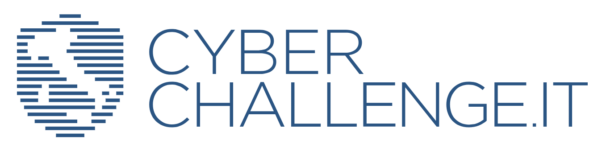
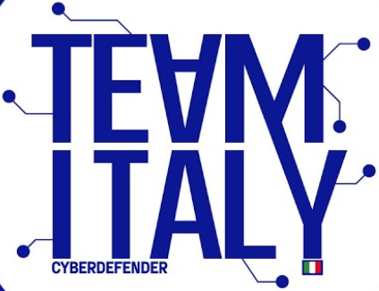
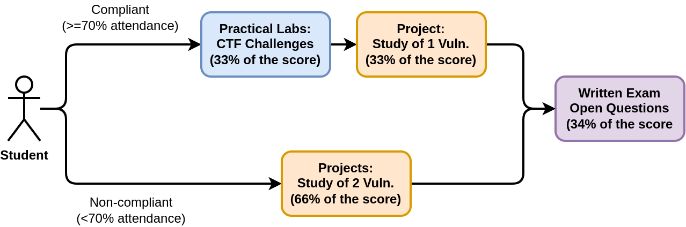
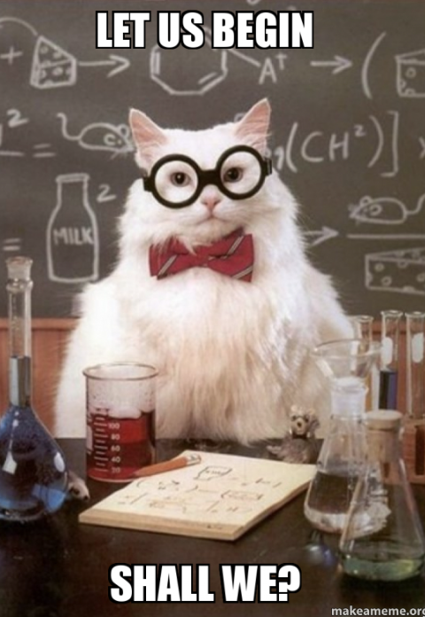

<!-- .slide: data-state="front hide-controls" --> <div id="title">Course Overview</div> <div id="subtitle">Data Privacy and Security</div> <div id="date">Data Science and Management (DASMA)</div> --- ## Important Resources <div class="content-center"> Web Resources you should have access to: - [MyLUISS Course Page](https://my.luiss.it/course/view.php?id=1650) - [Syllabus](https://my.luiss.it/mod/mtlockedpage/view.php?id=38213) - [Rooms and Timetable](https://pianificazionespazi.luiss.it/PortaleStudentiLuiss/) </div> --- ## e-Learning Platform <div class="content-center"> [**MyLUISS**](https://my.luiss.it) is our e-Learning platform: ***It is important that you get access!*** <br> You’ll find there: - **Slides** covering: - theory - hands-on sessions - **Details** on exam dates, reservations, results (besides standard Luiss channels) - **Communications** from teacher and teaching assistants <br> A live and editable version of the course material is available at https://datapsec.github.io/ </div> --- ## Teacher <div class="content-center"> <table style="width:100%; border-collapse: collapse;"> <tr> <td style="width:25%; vertical-align:top; padding:10px;"> <img src="https://introcp.github.io/src/A00/img/coppa.jpg" alt="Emilio Coppa" style="width:100%; max-width:380px;"> </td> <td style="vertical-align:top; padding: 35px;"> <strong>Emilio Coppa</strong> <br><br> <ul> <li>Position: Assistant Professor Tenure-Track @ LUISS</li> <li>Research topics: software testing, vulnerability detection</li> <li>Other info: <a href="https://ecoppa.github.io">https://ecoppa.github.io</a></li> <li>Office Hours: send me an e-mail so we can arrange a time slot.</li> <li>Contact: <a href="mailto:ecoppa@luiss.it"><code>ecoppa@luiss.it</code></a></li> </ul> </td> </tr> </table> </div> --- ## Besides research activities <div class="content-center"> <div class="columns-container columns-top"> <div class="col"> CyberChallenge.IT is a national cybersecurity training program for university and high school students. <p></p> <br> - National organizer 2017-19 - Local organizer at Sapienza 2017-23 - Sapienza has won CC.IT in 2023-25 🥇 </div> <div class="col"> TeamItaly is the italian national cyber security team that takes part in to institutional CTFs. <p></p> <br> - Coach in 2017 - Team Manager in 2018-19 - Team Manager in 2024-26 - 1st position at ECSC 2025 🥇 </div> </div> </div> --- ## Teaching assistants <div class="content-center"> <table style="width:100%; border-collapse: collapse;"> <tr> <td style="width:25%; vertical-align: center; padding:10px;"> <br> </td> <td style="vertical-align:top; padding: 35px;"> <br> <strong>Lorenzo Ariemma</strong> <br><br> <ul> <li>PhD in Computer Science and Automation</li> <li>Research topics: Computer Networks, Cybersecurity</li> <li>Office Hours: send me an e-mail so we can arrange a time slot.</li> <li>Contact: <a href="mailto:lariemma@luiss.it"><code>lariemma@luiss.it</code></a></li> </ul> </td> </tr> <tr> <td style="width:25%; vertical-align: center; padding:10px;"> <br> </td> <td style="vertical-align:top; padding: 35px;"> <br> <strong>Lorenzo Ralli</strong> <br><br> <ul> <li>PhD Student in Cybersecurity @ Sapienza-LUISS</li> <li>Research topics: Software Security</li> <li>Office Hours: send me an e-mail so we can arrange a time slot.</li> <li>Contact: <a href="mailto:lralli@luiss.it"><code>lralli@luiss.it</code></a></li> </ul> </td> </tr> </table> </div> --- ## Course Goals <div class="content-center"> The course provides essential knowledge in data privacy and cybersecurity, blending theoretical concepts with practical skills: - **Cryptography**: symmetric ciphers, asymmetric ciphers, hashing and digital signatures. - **Authentication**: passwords, MFA, certificates. - **Anonymous communication**: TOR and the dark web. - **Blockchain technologies**: fundamentals and smart contracts. - **Software vulnerabilities**: CWE, Zero day vs n-day, CVE, CVSS, OWASP Top 10. - **Web security**: server- and client-side vulnerabilities. - **Regulations**: Cybersecurity Act and GDPR. </div> --- ## When and where <div class="content-center"> 1) **Monday** @ 14:45 - 16:15 (90 min) see room schedule (often) Theoretical lectures <br> 2) **Tuesday** @ 15:30 - 17:00 (90 min) see room schedule (often) Lab Session with TA <br> 3) **Wednesday** @ 18:15 - 19:45 (90 min) see room schedule (often) Lab Session with TA </div> --- ## Exam <div class="content-center"> A) Attending students: - 33% of the final grade: hands-on sessions during the course - 33% of the final grade: project (see project description) - 34% of the final grade: written exam <br> B) Non-attending students: - 66% of the final grade: project (see project description) - 34% of the final grade: written exam </div> --- <div class="content-center"> <p></p> </div> --- ## Attending students: hands-on sessions (33% of the final score) <div class="content-center"> During the lectures, we will solve **together** some challenges: - each **challenge** is a cybersecurity task that you have to solve - it is inspired by a real-world scenario but with simplified conditions - when you solve a challenge, you get a **flag** that certifies your achievement - you have to submit the flag to our **Capture-The-Flag platform** to prove the task solution The score is computed as the percentage of the challenges you have solved. </div> --- ## Capture The Flag? <div class="content-center"> Our practical session are organized as a **Capture The Flag (CTF) competition**. A Capture the Flag (CTF) is a computer security competition. CTF contests are usually designed to serve as an educational exercise to give participants hands-on experience in the sort of attacks and protections found in the real world. There are two main styles of capture the flag competitions: jeopardy - like this competition - and attack/defense. Jeopardy-style competitions usually involve multiple categories of problems, each of which contains a variety of questions that range from easy to more difficult ones. Teams or individuals attempt to earn the most points in the competition's time frame, but do not directly attack each other. CTFs often touch many aspects of information security, like cryptography, steganography, binary analysis and exploitation, reverse engeneering, web security, mobile security and others. This competition will be focused on email security and web security (client and server-side). </div> --- ## Attending students: project (33% of the final score) <div class="content-center"> The project: - involves the study of **one** real-world vulnerability - is submitted as **one** 15 pages report: - description of the affected program - description of the vulnerability type - description of the vulnerability - exploitation of the vulnerability - mitigation of the vulnerability - [optional, only for higher score] reproduction and fix of the vulnerability in a docker container - is evaluated based on a 0-30 points scale: - 25 points for the report - 5 points for reproduction environment </div> --- ## Non-attending students: project (66% of the final score) <div class="content-center"> The project: - involves the study of **two** real-world vulnerabilities - is submitted as **two** 15 pages report: - description of the affected program - description of the vulnerability type - description of the vulnerability - exploitation of the vulnerability - mitigation of the vulnerability - reproduction and fix of the vulnerability in a docker container - is evaluated based on 0-30 points scale: - 20 points for the reports - 10 points for reproduction environment - **Reproduction environment is required!** </div> --- ## Attending and non-attending students: written exam (34% of the final score) <div class="content-center"> - It lasts one hour - Up to five open questions on the topics of the course - One question may cover the topic of your project </div> --- <div class="content-center"> <div class="cell-center"> <p></p> </div> </div>